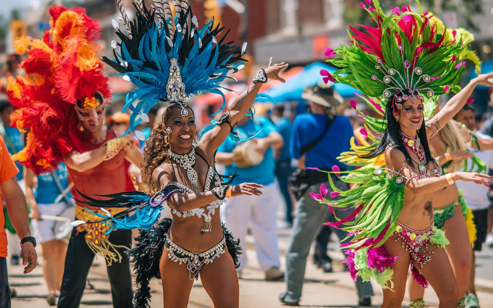

Samba
El ritmo más representativo de Brasil y símbolo del carnaval.

Ritmos tradicionales y expresiones culturales brasileñas.
La música brasileña es una vibrante amalgama de influencias africanas, europeas (portuguesas) e indígenas, caracterizada por ritmos sincopados, percusión rica y una profunda expresividad emocional.
El ritmo más representativo de Brasil y símbolo del carnaval.

Fusión entre samba y jazz con estilo suave y elegante.
Expresión cultural que mezcla danza, música y arte marcial.